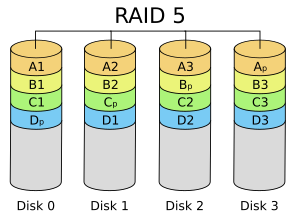

RAID5 as an Error-correcting Code
五 13 九月 2024
As a researcher in the field of quantum error correction, I have cited it in the application section of my slides many times, that error correcting codes are everywhere, including memories like RAID and teleportation procotol like 5G and 6G. But it is only recently I learned how eaactly the error correcting codes are used in RAID5, when I planned to but a NAS storage for myself and study how it works.

As seen in this images for a NAS with 4 disks, all storages have been divided into strips. The strips names with numbers like A1,A2,B1,..., are normal data storages. The stipes named with index p are parity computed from stipes with same alphabet name. For example, \(A_p = A1+A2+A3 mod 2\). Equivalently, \(A1+A2+A3+A_p=0 mod 2\). With this extra parity, if any one of them is lost, it can be recovered from the parity of the other three.
From the view of error correcting codes, this protocal encodes three bits of (logical) information into four (physical) bits. The encoded messaged, \(m=[A1 A2 A3 A_p]\) as binary vector form, should satisfy the parity check condition \(Hm^T=0\), where \(H = [1 1 1 1]\). This error correcting code has parameters \([n,k,d]=[4,3,2]\), and it is indeed the dual code of repetition code. Normally a code with distance \(d=2\) could only detect single error but not correcting them. But in NAS storage, it is not an unknown erroneous bit, but actually an erasure channel. The issue is about a lost disk and we know which one it is. Distsance 2 is enough to recover single erasure.
For now we have seen how the error correcting code is used in RAID5, with only the A sectors. Then why there are B, C, Ds in the scheme? This results from balancing reading and writing speed. When writing new data, the processor need to finish the following: write data into one disk; read other two disks; compute the parity; write parity into the fourth disk. Ignore the delay of computing parity, it read two disks and write two disks. Normally, a disk can do read and write at the same time, and read is much faster than writing. Hence, to read peak performance, it is better to distribute reading and writing tasks evenly among all disks. That why we see strips B,C,D with parity strip in different location. In RAID5, the strip length is 64k (65536 * 8 = 524288 bits ).
RAID5 can recover a lost disk among any number of disks, just by extending the alphabet list of A,B,C,D,E,.... Then a question would be, how can one recover from two lost disks.
Say if A1 and B1 are lost, based on RAID5, one can recover A1+B1. In order to recover both of them, one should have A1 or B1 contained in an extra parity bit. To be more general, in order to recover any two disks, then any two disks should been computed from at least one different parity bit. To achieve this, one can add unique index \(i,j\) for each disk and assign index \(l\) for parity bits, then let parity \(P_l\) computing parity for all \(i=l\) and \(j=l\). This ensure each disk have parity info in two different parity bits.
P o o
o P o
o o P
# 2D array to recover from any two lost disks
# P for parity disk
# o for data disk
Let me explain the procotal again. We are actually distribute the disks in a 2D array. The disagnal terms are for parity computations, which compute all bits in its row and column.
This procotal is enough, but may not be the most efficient one. Since to recover x,y from x+y, one only need to know x or y, but not both x and y. I will leave this for future explorations.
Category: blog Tagged: raid5 QEC error-correcting-code Published by Weilei Zeng